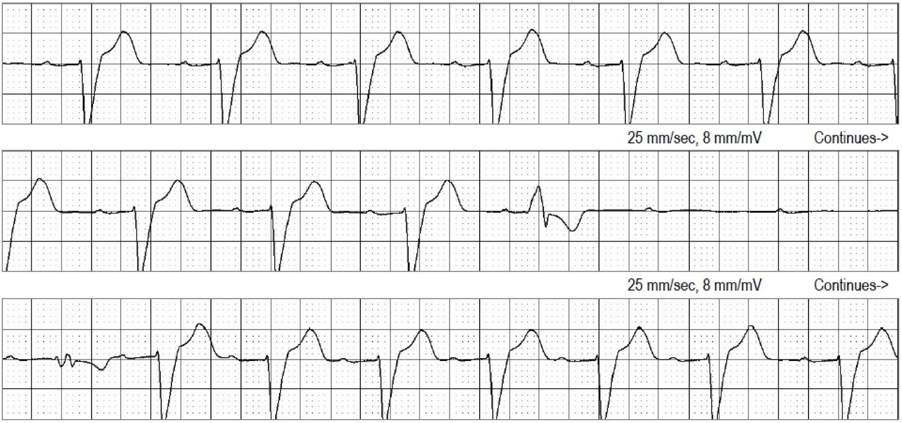
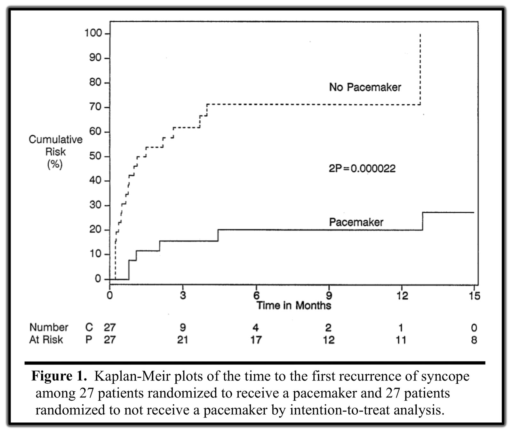
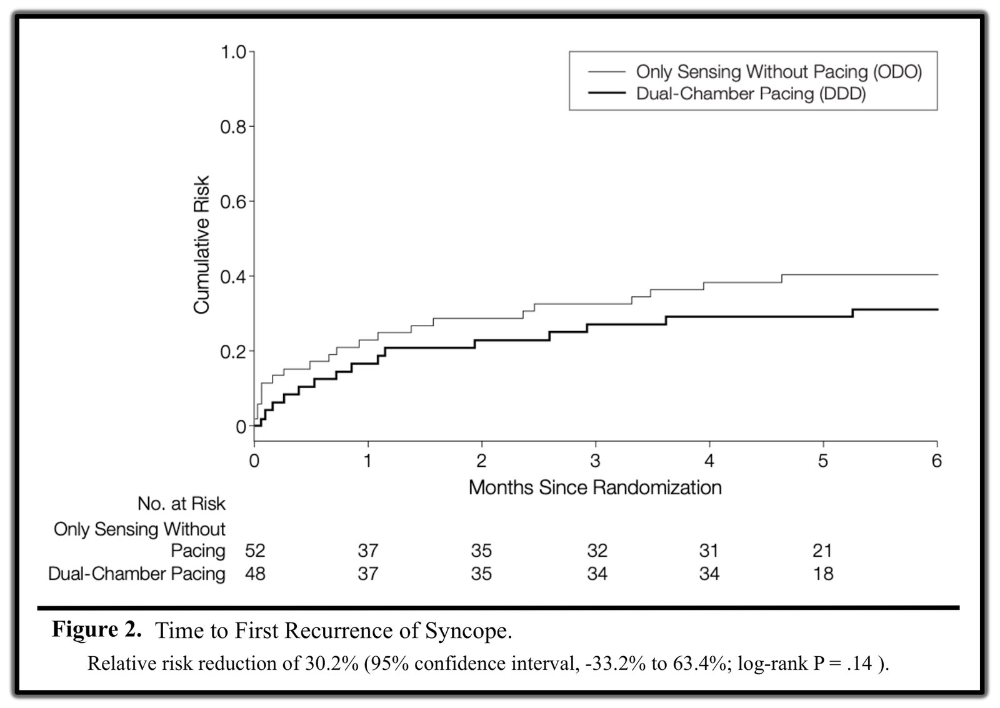
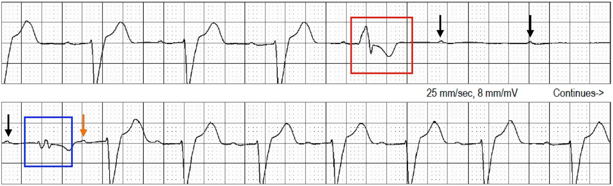
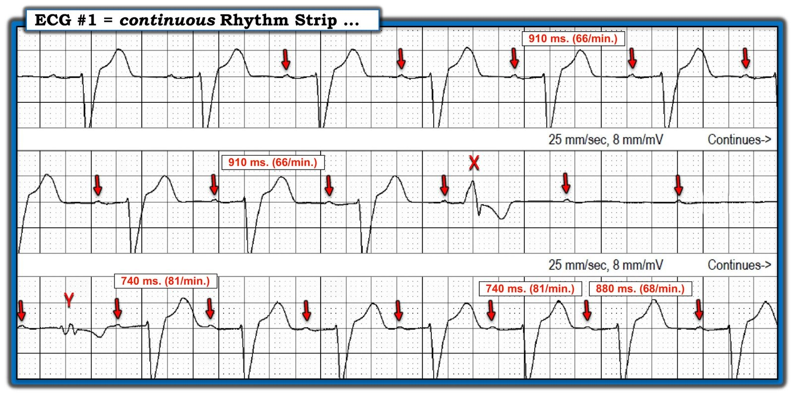

04/02/2025 — Ngất và một khoảng ngưng ngắn trên máy ghi biến cố
Bản dịch tiếng Việt của bài "Syncope and a short pause on event monitor" – Dr. Smith’s ECG Blog. Giữ nguyên toàn bộ 7 hình ảnh của bản gốc.
Tác giả: Willy Frick
Một người đàn ông trung niên đang kiểm tra thức ăn trong lò nướng (đang đóng) của mình thì cảm thấy choáng váng trong vài giây. Sau đó ông tỉnh dậy trên sàn nhà, không rõ mình đã bất tỉnh bao lâu. Ông đến khám và được làm các thăm dò nội trú, bao gồm theo dõi từ xa (telemetry), đều không phát hiện gì bất thường. Ông được xuất viện với một máy ghi biến cố (event monitor) và hẹn tái khám chuyên khoa điện sinh lý.
Máy ghi biến cố được đeo trong bốn tuần và hầu như không ghi nhận bất thường nào, nhưng đã ghi được dải nhịp sau đây.


Bạn nghĩ gì?
Liệu phát hiện chỉ 3 sóng P bị blốc trên máy ghi biến cố 4 tuần có đủ để chỉ định tạo nhịp vĩnh viễn không?
Trả lời: CÓ. Hãy nhớ rằng chỉ một cơn ngất do tim xảy ra không đúng lúc (ví dụ khi đang lái xe) cũng đủ gây tử vong.
Nếu blốc không có bản chất phế vị, bệnh nhân nên được đặt máy tạo nhịp. Tại sao tôi lại phân biệt điều này?
Đã có một thử nghiệm ngẫu nhiên nhằm xác định liệu máy tạo nhịp có mang lại lợi ích cho bệnh nhân ngất do phản xạ phế vị (vasovagal syncope) hay không, với cái tên rất đúng là Nghiên cứu Máy tạo nhịp trong Ngất phế vị Bắc Mỹ (The North American Vasovagal Pacemaker Study, VPS). Các bệnh nhân có từ 6 cơn ngất trở lên và nghiệm pháp bàn nghiêng dương tính được phân ngẫu nhiên theo tỷ lệ 1:1 vào nhóm đặt máy tạo nhịp hoặc không đặt máy tạo nhịp. Họ đã phát hiện được gì?


Tạo nhịp mang lại lợi ích lớn! Nguy cơ tương đối của ngất giảm hơn 85%! Số người cần điều trị là 2. Chúng ta hầu như chưa bao giờ thấy lợi ích lớn đến thế! Vậy thì… Tại sao chúng ta không tạo nhịp cho bệnh nhân ngất do phản xạ phế vị?
Trả lời: Không có nhóm chứng giả (sham control). Một nửa số bệnh nhân trong VPS biết rằng họ được cấy một chiếc máy tính tinh vi để giúp tim đập và ngăn ngất. Và một nửa số bệnh nhân biết rằng họ KHÔNG được đặt thiết bị như vậy. May mắn là nghiên cứu này đã được lặp lại với nhóm chứng giả. Trong nghiên cứu lặp lại (VPS II), MỌI bệnh nhân đều được cấy máy tạo nhịp. Một nửa số máy được bật chức năng tạo nhịp, và một nửa được cài đặt chỉ nhận cảm mà không tạo nhịp. Quan trọng nhất là cả bệnh nhân lẫn bác sĩ đều không biết bệnh nhân nào nhận điều trị nào, đảm bảo làm mù thích hợp. Các tác giả đã phát hiện được gì trong VPS II?


Trả lời: Không giảm ngất có ý nghĩa!! Một kết quả gây sửng sốt. Đây là một trong nhiều ví dụ trong lịch sử y học nhắc chúng ta về tầm quan trọng của việc làm mù trong thử nghiệm lâm sàng. Tại sao không có lợi ích? Có lẽ vì nhịp chậm trong ngất do phản xạ phế vị chỉ là một phần của đáp ứng thần kinh tự chủ. Còn có giãn mạch hệ thống gây hạ huyết áp thoáng qua và giảm tưới máu não. Đây là lý do chúng ta không thường quy tạo nhịp cho bệnh nhân ngất do phản xạ phế vị.
Quay lại ca bệnh:
Chúng ta có thể nói thêm gì về nguyên nhân gây blốc ở đây không? Liệu có phải do phế vị?
Đây được gọi là “blốc nhĩ thất kịch phát” (paroxysmal atrioventricular block), do một hiện tượng gọi là “dẫn truyền lệch hướng pha 4” (aberrancy). Giải thích ngắn gọn là một nhát đến sớm làm tái lập (reset) bó His. Sự kéo dài (rất nhẹ) độ dài chu kỳ sau đó làm kéo dài thời gian khử cực tâm trương tự phát ở pha 4 của điện thế hoạt động, khiến bó His trở nên trơ. Blốc pha 4 còn được gọi là “blốc phụ thuộc nhịp chậm” (bradycardia dependent block). Bó His vẫn trơ cho đến khi một ngoại tâm thu khác (nhát thoát, PVC, PAC, v.v.) tái lập bó His, cho phép nó dẫn truyền trở lại. Nếu bạn muốn đọc thêm về vấn đề này, hãy xem phần tài liệu tham khảo ở cuối bài, đặc biệt là các bài của Lee và Pillai.
Trong ví dụ trên, PVC thứ nhất (đóng khung đỏ bên dưới) khử cực bó His vào một thời điểm không thuận lợi, khiến nó trở nên trơ. Sau đó ba sóng P xoang (mũi tên đen) bị blốc. Cuối cùng, một ngoại tâm thu thất thứ hai (đóng khung xanh lam) tái lập bó His, và sóng P xoang tiếp theo (mũi tên cam) đánh dấu sự phục hồi dẫn truyền AV 1:1.


Cách nhận biết loại blốc này là nó vừa khởi phát và vừa kết thúc bằng một ngoại tâm thu, và tần số xoang nền thường thay đổi rất ít. Ngược lại, blốc do phế vị đi kèm với chậm tần số xoang.
Bệnh nhân được dặn dò nghiêm ngặt không lái xe, vận hành máy móc, v.v. và được lên lịch cấy máy tạo nhịp.
Những điểm cần học:
- Chẩn đoán blốc pha 4, một chỉ định tạo nhịp vĩnh viễn
- Giải thích tại sao chúng ta không thường quy tạo nhịp cho bệnh nhân ngất do phản xạ phế vị
- Ôn lại VPS và VPS II, một bài học lịch sử về tầm quan trọng của nhóm chứng giả
Tài liệu tham khảo:
Connolly, S. J., Sheldon, R., Thorpe, K. E., Roberts, R. S., Ellenbogen, K. A., Wilkoff, B. L., Morillo, C., & Gent, M. (2003). Pacemaker therapy for prevention of syncope in patients with recurrent severe vasovagal syncope: Second Vasovagal Pacemaker Study (VPS II): a randomized trial (Điều trị bằng máy tạo nhịp để phòng ngất ở bệnh nhân ngất phế vị nặng tái phát: Nghiên cứu Máy tạo nhịp trong Ngất phế vị lần thứ hai (VPS II): một thử nghiệm ngẫu nhiên). JAMA, 289(17), 2224. https://doi.org/10.1001/jama.289.17.2224
Connolly, S., Sheldon, R., Roberts, R., & Gent, M. (1999). The North American Vasovagal Pacemaker Study (VPS) (Nghiên cứu Máy tạo nhịp trong Ngất phế vị Bắc Mỹ). Journal of the American College of Cardiology, 33(1), 16–20. https://doi.org/10.1016/s0735-1097(98)00549-x
Lee, S., Wellens, H. J. J., & Josephson, M. E. (2009). Paroxysmal atrioventricular block (Blốc nhĩ thất kịch phát). Heart Rhythm, 6(8), 1229–1234. https://doi.org/10.1016/j.hrthm.2009.04.001
Pillai, A., Ellenbogen, K. A., & Padala, S. K. (2021). A tale of 2 blocks (Câu chuyện về hai blốc). Circulation, 143(10), 1062–1065. https://doi.org/10.1161/circulationaha.120.052981

===================================
BÌNH LUẬN CỦA TÔI, bởi KEN GRAUER, MD (4/2/2025):
===================================
Một ca bệnh đầy tính khai sáng của Dr. Frick — với sự xuất hiện tình cờ nhưng cứu mạng của một khoảng ngưng ngắn duy nhất trong suốt 4 tuần theo dõi, mà nếu không có nó thì kết cục nhiều khả năng đã là một cái chết đột ngột (và không rõ nguyên nhân) có thể phòng tránh được của bệnh nhân.
Xem kỹ hơn: Khoảng ngưng Ngắn Duy nhất …
Quả thật kỳ lạ khi một giai đoạn theo dõi 4 tuần vốn âm tính lại ghi được một “hình ảnh kinh điển trong sách giáo khoa” như vậy của PAVB (blốc nhĩ thất kịch phát – Paroxysmal AtrioVentricular Block) — trong đó chúng ta thấy cả sự khởi phát của khoảng ngưng thất kéo dài vài giây do một nhát thất hơi sớm thúc đẩy (được đánh dấu “X” trong Hình 1) của tôi — cũng như sự kết thúc của khoảng ngưng do một nhát thất thứ 2 đến sớm hơn dự kiến khởi động (được đánh dấu “Y” trong Hình 1 của tôi).
- Như Dr. Frick đã nêu — nguyên nhân chính của một hoặc nhiều khoảng ngưng đột ngột trong PAVB là do hệ His-Purkinje bị bệnh. Việc bệnh nhân hôm nay có thể có cơ địa dễ mắc rối loạn này được gợi ý trong Hình 1 bởi: i) QRS giãn rộng rõ ràng trên dải nhịp theo dõi điện tâm đồ một chuyển đạo này (gợi ý một dạng blốc nhánh nào đó); — và, ii) Blốc AV độ 1 ở các nhát được dẫn truyền (khoảng PR ~0.26 giây).
- Mặc dù dải nhịp liên tục trong Hình 1 không biểu hiện chậm tần số nhĩ trước khi khởi phát khoảng ngưng thất (tức là, tần số nhĩ khá ổn định ở mức ~66/phút trong 2 dòng đầu của dải nhịp) — nhưng có sự thay đổi tần số nhĩ sau khi dẫn truyền AV 1:1 trở lại (dưới dạng tần số nhĩ tăng nhẹ lên ~81/phút trong 6 nhát — cho đến khi tần số nhĩ chậm hơn trở lại ở cuối dòng thứ 3). Vậy, có lẽ rốt cuộc vẫn có một phần ảnh hưởng phế vị có thể đang tác động? (tức là, blốc AV độ 1 — và một mức biến thiên tần số).
- “Phản biện” (Devil’s Advocate) — Nhát “Y” thực ra trông giống một nhát hỗn hợp (có hình dạng trung gian giữa các nhát dẫn truyền từ xoang và nhát thất sớm “X” ) — nếu đúng như vậy, điều này sẽ tạo ra sự “tái lập” (reset) tức thì dẫn truyền His-Purkinje.


Blốc Nhĩ Thất Kịch phát (PAVB):
Như phần bàn luận của Dr. Frick đã gợi ý — và như Bansal và cs. (J Arrhythmia 35:870-872, 2019) và Bosah và cs. (Cureus 14[7]: e27092, 2022) đã mô tả — thực thể được gọi là PAVB là một nguyên nhân gây ngất tiềm tàng, dễ bị bỏ sót, và có khả năng gây tử vong (có lẽ thường xuyên hơn so với nhận thức chung).
- PAVB có đặc điểm là khởi phát đột ngột, không lường trước của blốc AV hoàn toàn với nhịp thoát thất chậm trễ — do đó dẫn đến một giai đoạn có thể kéo dài không có bất kỳ phức bộ QRS nào trên điện tâm đồ. Trước khoảng ngưng kéo dài — bệnh nhân biểu hiện dẫn truyền AV 1:1 mà không có bằng chứng nào khác của blốc AV (đó là lý do vì sao sự khởi phát PAVB thường hoàn toàn không được nghi ngờ! ).
- Do khởi phát hoàn toàn bất ngờ và có xu hướng gây đột tử — PAVB khó ghi nhận được và bị chẩn đoán thiếu đáng kể.
- Ba cơ chế gây PAVB đã được mô tả: i) Qua trung gian phế vị (tức là, Blốc do cường phế vị (Vagotonic Block) — như đã mô tả trong bài đăng ngày 31 tháng Một năm 2019, — và chi tiết hơn TẠI ĐÂY — với các tài liệu tham khảo liệt kê ở cuối bài Blog đó dẫn ra các trường hợp vô tâm thu thoáng qua do trương lực phế vị quá mức!); ii) PAVB nội tại (Pha 4 = phụ thuộc khoảng ngưng hoặc phụ thuộc nhịp chậm) ; — và, iii) Vô căn.
i) Blốc AV do cường phế vị:
Thể PAVB này có thể lành tính khi là hậu quả của một đợt tăng vọt mạnh, thoáng qua của trương lực phó giao cảm ở một người vốn khỏe mạnh (như có thể xảy ra khi nôn dữ dội; một cơn ho dữ dội; phản ứng phế vị khi lấy máu).
- Vấn đề trong PAVB do cường phế vị khu trú bên trong nút AV.
- Thường có “tiền triệu” vã mồ hôi, buồn nôn, chóng mặt — với việc bệnh nhân nhận biết mình sắp ngất.
- Các dấu hiệu điện tâm đồ đặc trưng của PAVB do cường phế vị gồm tần số xoang chậm dần — thường kèm khoảng PR tăng dần và ổ thoát QRS hẹp — sau đó là hồi phục với tần số xoang trở về bình thường dần dần và khoảng PR bình thường.
ii) PAVB nội tại:
Cơ chế PAVB này đã được gắn với nhiều tên gọi — thường gặp nhất là “blốc AV pha 4” và/hoặc PD-PAVB (PAVB phụ thuộc khoảng ngưng – Pause-Dependent PAVB).
- PD-PAVB dường như là cơ chế chính của nhịp tim trong ca hôm nay (dù vẫn có khả năng có phần đóng góp của phế vị, xét đến sự biến thiên tần số nhĩ trong Hình 1). Như Dr. Frick đã nêu — bệnh lý nền của PD-PAVB là bệnh hệ His-Purkinje nặng (được ủng hộ bởi dấu hiệu QRS giãn rộng ở các nhát dẫn truyền trong dải nhịp hôm nay). Thể PD-PAVB này nhiều khả năng gây tử vong trừ khi bệnh nhân được đặt máy tạo nhịp vĩnh viễn.
- Như ca bệnh của Dr. Frick đã minh họa tuyệt vời — sinh lý bệnh thú vị của PD-PAVB là hậu quả của sự xuất hiện tình cờ của một PAC hoặc PVC “đúng thời điểm”, khử cực một phần HPS (hệ His-Purkinje) bị bệnh tại một điểm cụ thể trong chu kỳ, khiến HPS vốn hoạt động kém không thể hoàn tất quá trình khử cực. Khoảng ngưng kéo dài của khử cực thất sau đó có thể chỉ chấm dứt nếu một PAC hoặc PVC “đúng thời điểm” khác xuất hiện vào đúng thời điểm cần thiết để “tái lập” (reset) chu kỳ khử cực của HPS (điều này có lẽ giải thích vì sao bệnh nhân trong ca hôm nay tự hồi phục).
- Đáng lưu ý — mặc dù QRS giãn rộng và blốc AV độ 1 được thấy ở các nhát dẫn truyền trong ca hôm nay — có tới 1/3 bệnh nhân PD-PAVB không có bằng chứng rối loạn dẫn truyền trên điện tâm đồ. Điều này gây khó khăn cho việc ghi nhận và giải thích vì sao chẩn đoán lại rất dễ bị bỏ sót.
iii) PAVB vô căn:
Đây là thể PAVB được mô tả gần đây nhất — trong đó các dấu hiệu không hoàn toàn phù hợp với 2 thể kia.
- Điện tâm đồ nền trước khi xảy ra PAVB vô căn thường bình thường.
- Không thấy “yếu tố khởi phát” nào cho PAVB (tức là, không có nguồn gây trương lực phế vị quá mức — và không thấy PAC/PVC thúc đẩy nào).
============================
ĐIỀU CỐT LÕI: Điều quan trọng là cần biết đến các thể PAVB khác nhau — mà cho đến gần đây vẫn rất thường bị bỏ sót, đặc biệt ở những bệnh nhân không có bằng chứng rối loạn dẫn truyền trên điện tâm đồ nền.
- Thật may mắn là bệnh nhân này đã được theo dõi trong một thời gian dài ( = 4 tuần). Tôi thấy thật khiêm nhường khi nhận ra chẩn đoán ở bệnh nhân hôm nay đã có thể bị bỏ sót dễ dàng đến mức nào.